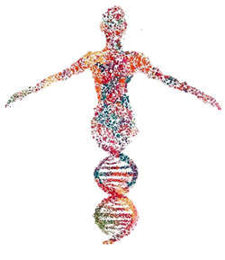

Proyecto Genoma Humano
El Proyecto Genoma Humano (PGH) fue una iniciativa científica internacional de gran envergadura cuyo objetivo fue determinar la secuencia completa de nucleótidos del ADN humano y localizar todos sus genes. Constituye uno de los mayores hitos de la biología y la bioinformática, marcando un antes y un después en el estudio de la genética y la medicina.

Proyecto Genoma Humano
Origen y surgimiento
La idea de secuenciar el genoma humano comenzó a discutirse en la década de 1980. En 1984, durante una reunión en el Laboratorio Nacional de Los Álamos, y en conferencias como las de Cold Spring Harbor, se planteó la posibilidad de abordar este desafío. El rápido desarrollo de nuevas tecnologías de secuenciación y de la biología molecular impulsó la viabilidad del proyecto.
En 1988, la Academia Nacional de Ciencias de EE. UU. publicó un informe que recomendaba el lanzamiento de un programa coordinado para la secuenciación del genoma humano. En 1990, con apoyo del Departamento de Energía de EE. UU. (DOE) y los Institutos Nacionales de Salud (NIH), se inició oficialmente el PGH.
Academina Naciotnal de Ciencias - Departamento de Energía - Institutos Nacionales de Salud
Objetivos principales
- Determinar la secuencia completa de los aproximadamente 3.200 millones de pares de bases del ADN humano.
- Identificar y mapear todos los genes humanos (estimados inicialmente entre 50.000 y 100.000, aunque finalmente resultaron ser entre 20.000 y 25.000).
- Desarrollar tecnologías de secuenciación y herramientas bioinformáticas para gestionar y analizar grandes volúmenes de datos.
- Crear mapas genéticos y físicos de alta resolución de los cromosomas humanos.
- Facilitar el acceso a la información genética, promoviendo el libre uso de los datos en la comunidad científica internacional.
- Estudiar las implicaciones éticas, legales y sociales de la información genómica (programa ELSI: Ethical, Legal and Social Implications).
Instituciones implicadas
El PGH fue un proyecto internacional y colaborativo. Algunas de las instituciones y países clave fueron: - Estados Unidos: NIH (National Institutes of Health), DOE (Department of Energy). - Reino Unido: Sanger Centre (actual Wellcome Sanger Institute). - Francia: Genoscope. - Alemania: Max Planck Institute for Molecular Genetics. - Japón: RIKEN y otras instituciones. - China: Beijing Genomics Institute (BGI).
También participaron laboratorios de Canadá, España y otros países europeos, en una colaboración sin precedentes en la historia de la biología.
Línea temporal detallada del Proyecto Genoma Humano
- 1984 → En Los Álamos se discute la idea de secuenciar el genoma humano.
- 1986 → El Departamento de Energía de EE. UU. (DOE) inicia proyectos preliminares en cartografía genética.
- 1988 → La Academia Nacional de Ciencias de EE. UU. recomienda oficialmente el lanzamiento del PGH.
- 1990 → Inicio oficial del Proyecto Genoma Humano, con un plan inicial de 15 años.
- 1992 → Establecimiento del Sanger Centre en Reino Unido, que se convierte en uno de los nodos principales del proyecto.
- 1995 → Se completa la secuenciación del primer genoma bacteriano: Haemophilus influenzae (fuera del PGH, pero hito tecnológico clave).
- 1996 → El consorcio internacional publica el primer mapa completo del genoma humano con marcadores de alta resolución.
- 1998 → Craig Venter anuncia la creación de Celera Genomics y su intención de secuenciar el genoma humano con un enfoque más rápido (shotgun sequencing).
- 1999 → Se completa la secuencia del cromosoma 22, el primero en ser secuenciado en su totalidad.
- 2000 → El presidente Bill Clinton (EE. UU.) y el primer ministro Tony Blair (Reino Unido) anuncian conjuntamente un borrador inicial del genoma humano.
- 2001 → Publicación en Nature (Consorcio Internacional) y en Science (Celera Genomics) de los borradores del genoma humano.
- 2003 → Se anuncia la finalización oficial del Proyecto Genoma Humano, coincidiendo con el 50.º aniversario de la doble hélice de Watson y Crick.
💡 Temporización del proyecto
Tecnología de secuenciación lenta
- En 1990, la secuenciación de Sanger era el método estándar.
- Permitía leer 500–800 bases por reacción.
- El genoma humano tiene 3.200 millones de pares de bases → ¡había que realizar millones de reacciones!
Necesidad de mapas previos
- Antes de secuenciar, había que construir mapas genéticos y físicos de alta resolución para dividir el genoma en fragmentos ordenados.
- Esto requería años de trabajo colaborativo en distintos laboratorios.
Limitaciones computacionales
- El ensamblaje de fragmentos secuenciados dependía de la bioinformática.
- A finales de los 80, los ordenadores no podían manejar grandes volúmenes de datos genómicos.
- Hubo que desarrollar nuevos algoritmos y bases de datos en paralelo.
Coste económico
- Secuenciar un solo gen costaba miles de dólares.
- El presupuesto estimado inicial del PGH fue de 3.000 millones de dólares → el ritmo de avance debía ajustarse a la financiación disponible.
Complejidad del Genoma Humano
- No era un genoma bacteriano compacto, sino enorme y lleno de repeticiones.
- Estas regiones repetitivas dificultaban el ensamblaje y requerían más tiempo de validación.
Conclusión
El Proyecto Genoma Humano transformó la biología molecular, dando origen a la genómica moderna y a la bioinformática a gran escala. Sus logros hicieron posible la medicina personalizada, el estudio comparativo de genomas de múltiples especies y el avance de áreas como la farmacogenómica, la biotecnología y la biología de sistemas.